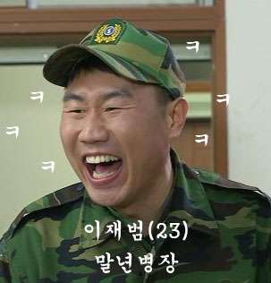
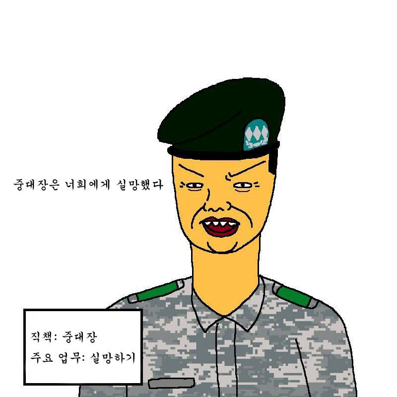
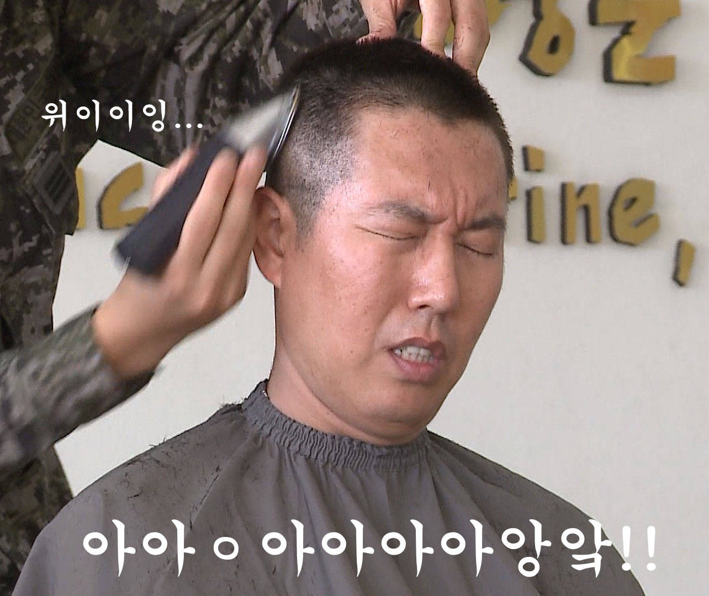
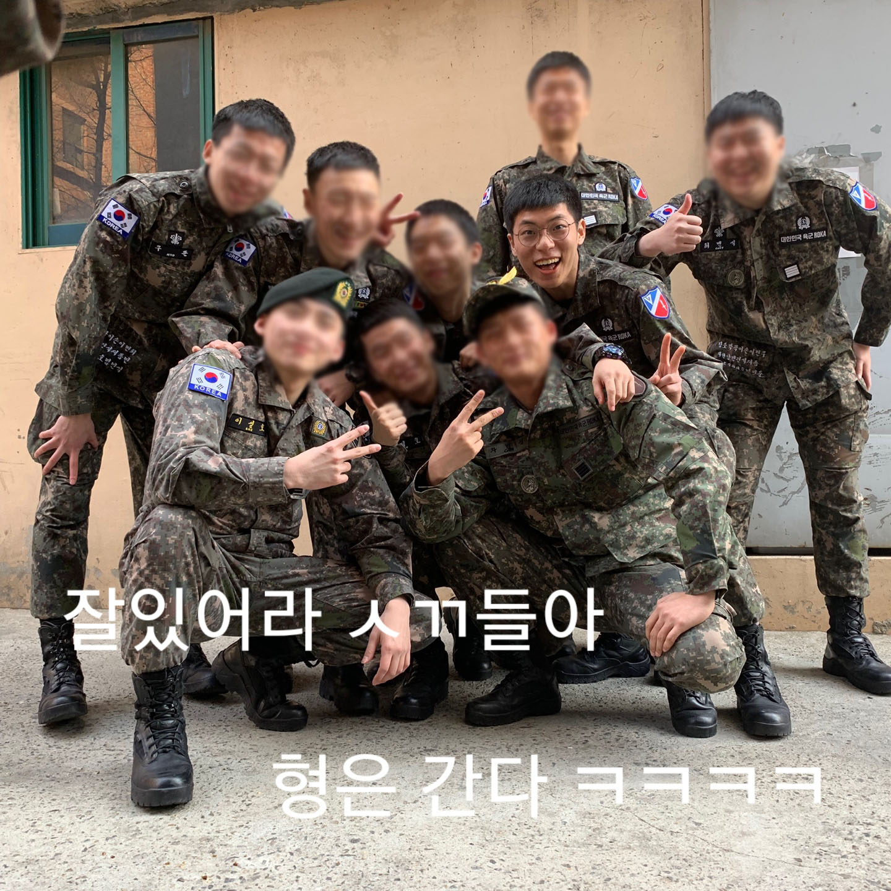

이른 아침 상황병이 갑자기 우릴 깨웠다. 중대장이 머리 지저분하면 전역 안시킨다고 머리 안짜른 놈들 알아서 정리하라고 했단다. 아니 오늘 전역날인데ㅔ...(소름) 하지만 우리는 그러지 않았다. 오늘 전역인데 머리 미는 미친 놈이 어디있겠는가...! 그냥 우리를 겁주는 거라고 생각했다.
이른 아침에 나와 내 동기들은 전역신고를 하기 위해 모였다. 모두 들떠가지곤 상황실에서 기다리고 있더니 우리의 중다이죠가 상황실로 올라라왔다. 올라오는 중다이죠의 미간은 잔뜩 찌뿌려져 있었다. 나는 본능적으로 알 수 있었다. 중대장의 기분이 좋지 않다는 것을... 마지막까지 곱게 가지는 못하겠구나 싶었다. 아니나 다를까 전역신고를 하던 중 중대장이 모두 베레모를 벗어보라고 했다. 모두 베레모를 벗자 풍성한 머리카락이 드러났다. 이를 본 중대장의 표정은 굳어갔다. "야! 니들 머리 안 잘랐았어?!" "짤랐습니다...;" 씨알도 안 먹힐 거짓말이었다.
"머리 자르기 전까지 니들 전역 못할 줄 알아라!" 중대장은 이 말을 남기고 중대장실로 들어가 버렸다.
우리 모두 상황 파악이 안되고 있었다. 전역을 못한다. 전역하려면 머리를 잘라야 한다. 어쩔 수없다. 잘라야한다. 우리들 중 이발병이 었던 애가 바리깡을 들었다. '위이이이잉....'
죽어도 자르기 싫다던 애들 머리가 잘려나갔다. 모두 머리를 자르고 우린 중대장실로 찾아갔다. 중대장 앞에서 다시 전역자 신고를 하고 중대장은 우리에게 너희는 오늘까지는 군인 신분이니 군인의 자세를 유지해야 한다느니 일장 연설을 늘여놓았다. 속으로 중대장 욕하며 버티던 우린 마지막에 전역증을 받고 중대장과 악수를 하고 중대장실에서 나왔다.
와 드디어 전역이다. 저녁 말고 전역이다. 밖으로 나오자마자 한숨 크게 들이쉰다. 아 상쾌하다. 625일간의 긴 여정이 끝났다. 이제 와서 생각해보니 군생활 금방이다. ㅋㅋㅋㅋ 그동안 별의 별 일들이 다 있었다. 이제 모두 좋은 추억으로 남을거다. 이제 집에 간다! 이제 김포 방향으론 오줌도 안 눌 것이다. ㅋㅋㅋㅋㅋㅋㅋㅋㅋㅋ
